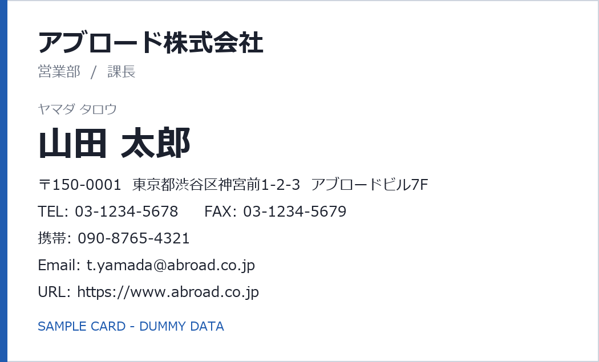

名刺入力画面
アンケートID SV-10238 オンデマンド 作業中: グループ③ 会社・部署・役職
名刺画像 — 表・裏 同時表示
ホバー拡大・クリック固定 ×2.0
＋
−
⟳
表

裏
 / ＋−で倍率 / Rで回転")
この名刺は裏面なし
(裏面の画像が登録されていません)
(裏面の画像が登録されていません)
この個票では担当グループの項目のみを入力します。
定型チップはクリックで入力し、同じ括り(法人格・部署・役職)の語が既にある場合は置換されるため二重入力になりません(もう一度クリックで解除)。
読み取れない文字は「〓」を入力
出題順: 納期区分→受付順・対象指定は不可。3回スキップされた名刺(読み取れない等)は「〓」入力での確定が基本。入力中に無操作が続くとロックが解除され、名刺画像を伏せます(入力内容は保持)。